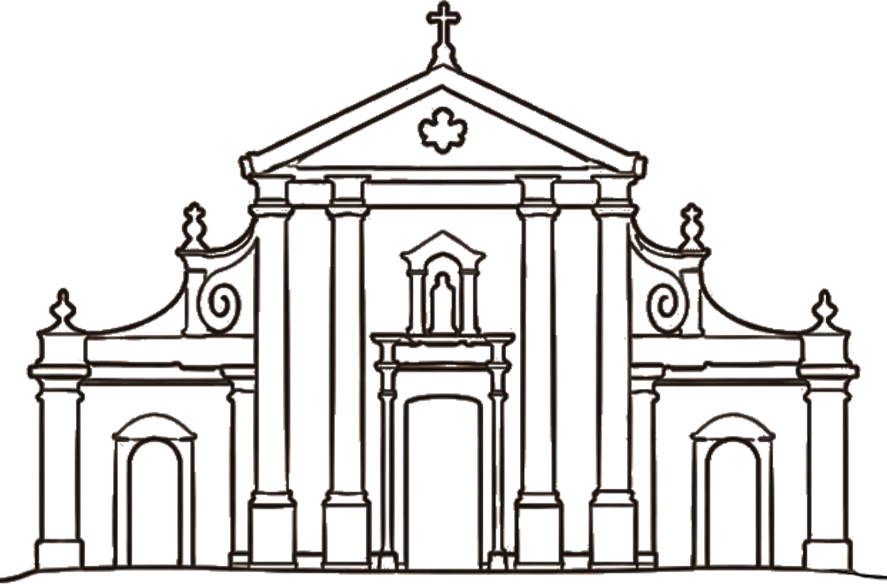
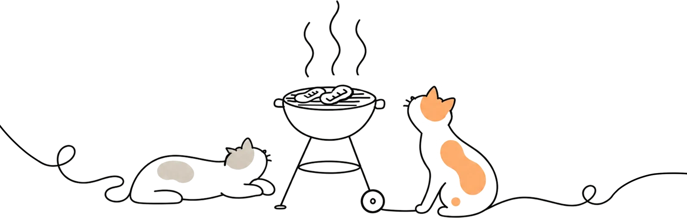

Chiesa del Gesù
Piazza Casa Professa 21, Palermo
Apri in MapsA tutte le persone a noi care,
siamo lieti di annunciare il nostro matrimonio
30 aprile 2027
Per vedere tutti i dettagli, aprite il link che trovate nel vostro invito.
La cerimonia
Venerdì 30 aprile 2027
Piazza Casa Professa 21, Palermo
Ore 15:15

Il ricevimento
A seguire, avremo grande gioia nel ritrovarci per festeggiare insieme questo giorno speciale presso
Via Ruggiero Settimo 8, Palermo
Ore 17:30
Il giorno dopo
Sale e Pepe hanno avvertito odore di carne e di rosticceria,
pare quindi che la festa continui!
Sale e Pepe hanno avvertito odore di carne e di rosticceria e noi sentiamo già la musica che suona!
Saremo felici di poter passare questa giornata insieme a voi!
Vi aspettiamo in Via Settipani 53, Balestrate
Ore 12:30

Come arrivare
Piazza Casa Professa 21, Palermo
Apri in MapsVia Ruggiero Settimo 8, Palermo
Apri in MapsVia Settipani 53, Balestrate
Apri in MapsIl centro storico di Palermo ha zone a traffico limitato (ZTL). Venerdì 30 aprile la ZTL diurna è attiva fino alle 20:00: se arrivate in auto, verificate orari e permessi sul sito del Comune di Palermo.
Speriamo di avervi tutti al nostro fianco per creare insieme uno dei ricordi più belli della nostra vita.
entro il 31 gennaio 2027
Avete già risposto e volete cambiare qualcosa? Scriveteci direttamente.
Quest’ultimo anno è stato fatto di valigie, voli attraverso l’oceano, saluti e giorni contati prima di riabbracciarci.
Ora comincia il viaggio che abbiamo desiderato più di tutti: una vita quotidiana, semplice, insieme.
Una vita che speriamo di continuare a condividere anche con voi, tra incontri, racconti e nuove occasioni per ritrovarci, ovunque saremo.
Il nostro regalo più bello il giorno del nostro matrimonio sarà poter condividere con voi questo inizio. Tuttavia per chi desidera accompagnarci anche con un supporto per le prossime avventure insieme, di seguito i nostri recapiti.